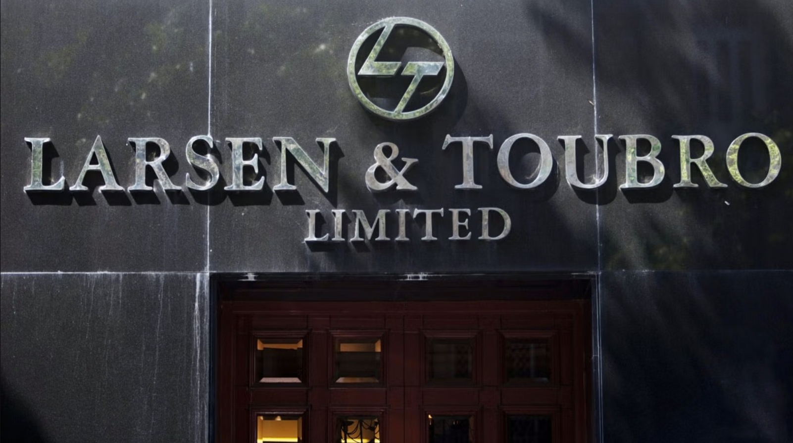

Larsen & Toubro Pvt Ltd

Larsen & Toubro Limited (L&T) is a prominent Indian multinational conglomerate headquartered in Mumbai.
Established in 1938 by Danish engineers Henning Holck-Larsen and Søren Kristian Toubro, the company has evolved into
a global leader in engineering, construction, manufacturing, and financial services. Operating in over 50 countries,
L&T is renowned for its expertise in executing large-scale infrastructure projects, including transportation
systems, power plants, and water treatment facilities. The company's diverse portfolio encompasses sectors such as
technology, defense, and real estate, with subsidiaries like L&T Technology Services and LTIMindtree extending its
reach into IT and digital solutions.
L&T's commitment to innovation and quality has solidified its position as a key player in driving India's industrial
and economic growth.